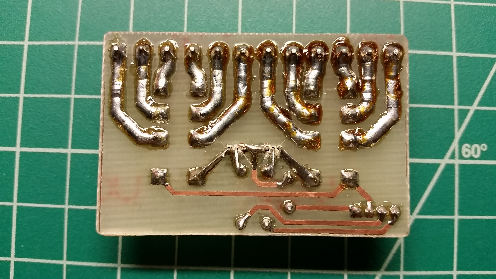

This is a simple relay control board for controlling high-current or high-voltage devices with an Arduino or other low-voltage controller. I designed the board and etched it with the same technique discussed here. The board itself is a pretty simple concept that has been executed many times before, but I already had the hardware and couldn't justify buying a commercially-made item. The board is very intuitive to use and fits my needs perfectly.
I tinned the high-current traces on the board to increase current capacity.